# 1) Import library yang diperlukan
import numpy as np
import pandas as pd
import matplotlib.pyplot as plt
from IPython.display import displayTUGAS 2 : KLASIFIKASI
Nama: Muhammad Hidayat
NIM: 0527471321 Pendahuluan
Universitas Terbuka adalah sebuah perguruan tinggi terbuka yang memberikan kesempatan bagi putra putri bangsa untuk menimba ilmu dan pengetahuan. UT memiliki mahasiswa dengan latar belakang yang beragam. Mahasiswanya tidak terbatas pada lulusan baru dari sma/smu/smk sederajat. Beberapa diantaranya bahkan telah/sedang bekerja. Kondisi tersebut memberikan kesulitan bagi pihak kampus dalam menerapkan strategi untuk membantu mahasiswa berhasil melewati masa kuliah dan lulus tepat waktu.
Sebagai seorang Machine Learning engineer, kamu diminta untuk membuat model yang mampu mendeteksi secara dini tingkat risiko kegagalan seorang mahasiswa. Dengan harapan jika sistem mampu memberikan informasi yang valid, maka bagian wali akademik dapat memberikan konseling yang tepat. Untuk melaksanakan tugasmu ini, kamu diberikan data yang bersumber dari dua periode penerimaan.
Tugas ini dibagi ke beberapa poin tugas:
- Memuat semua data yang ada ke dalam sistem.
- Memetakan perbedaan data yang ada, lalu menanganinya.
- Menyatukan data dan menangani masalah kodifikasi atribut fitur yang berbeda.
- Melakukan analisis atribut untuk setiap fiturnya, seperti:
- menangani missing value
- menangani data duplikat
- menangani data yang tidak valid
- dll.
- Melakukan visualisasi distribusi untuk setiap fitur, dilanjutkan dengan menangani outlier.
- Melihat hubungan setiap fitur dengan kelas target, untuk mendapatkan fitur yang relevan.
- Mengidentifikasi ketidakimbangan data, menentukan algoritma, dan menangani imbalance jika diperlukan, kemudian membagi data training dan testing.
- Melakukan training model dan evaluasi model.
- Melakukan prediksi dan evaluasi model terhadap data testing.
- Memberikan kesimpulan berdasarkan hasil evaluasi.
2 Persiapan Lingkungan
2.1 Library yang Digunakan
Sebelum memulai, import library yang diperlukan untuk melakukan proses data cleaning, data visualization, dan machine learning.
Berikut penjelasan singkat mengenai library yang diimport:
numpy: Library untuk melakukan operasi matematika dan manipulasi array.pandas: Library untuk manipulasi data dan analisis data, terutama dengan struktur DataFrame.matplotlib.pyplot: Library untuk membuat visualisasi data, seperti grafik dan plot.
2.1.1 Fungsi Helper
Berikut adalah definisi fungsi info_like yang digunakan untuk merangkum kolom data dengan format tabel yang rapi:
def info_like(df: pd.DataFrame):
# 1) Build the summary DataFrame
summary = pd.DataFrame({
"#": range(len(df.columns)),
"column": df.columns,
"non-null": df.notna().sum().values,
"dtype": df.dtypes.astype(str).values,
})
# 2) Build the dtype counts markdown string
dtype_counts = df.dtypes.astype(str).value_counts()
dtype_md_lines = [f"- `{dt}`: {cnt}" for dt, cnt in dtype_counts.items()]
dtype_md = "\n".join(dtype_md_lines)
return summary, dtype_md2.2 Pemuatan Data (Tugas 1)
Mulailah memuat semua data yang ada ke sistem.
# 1) Muat data dari kedua sumber
data_period1 = pd.read_csv('Data Siswa Periode 1.csv')
data_period2 = pd.read_csv('Data Siswa Periode 2.csv')# 2) Lihat atribut apa saja yang ada dari kedua data tersebut
print("Atribut Data Periode 1:\n")
for col in data_period1.columns.tolist():
print(f"- {col}")
print("\nAtribut Data Periode 2:\n")
for col in data_period2.columns.tolist():
print(f"- {col}")Atribut Data Periode 1:
- ID
- Status Pernikahan
- Program Studi
- Kelas Reguler/Malam
- Pendidikan Terakhir
- Nilai SMA
- Daerah Asal
- Pendidikan Ibu
- Pendidikan Ayah
- Pekerjaan Ibu
- Pekerjaan Ayah
- Nilai Ujian Masuk
- Pindahan
- Berkebutuhan Khusus
- Status pembayaran semester terakhir
- Jenis Kelamin
- Beasiswa
- Usia saat mendaftar
- IP Semester 1
- IP Semester 2
- Target
Atribut Data Periode 2:
- ID
- Status Pernikahan
- Program Studi
- Kelas Siang/Malam
- Pendidikan Terakhir
- Nilai SMA
- Daerah Asal
- Pendidikan Ibu
- Pendidikan Ayah
- Pekerjaan Ibu
- Pekerjaan Ayah
- Nilai Ujian Masuk
- Pindahan
- Berkebutuhan Khusus
- Status pembayaran semester terakhir
- Jenis Kelamin
- Beasiswa
- Umur saat mendaftar
- IP Semester 1
- IP Semester 2
- Target
Di atas merupakan daftar kolom yang muncul pada kedua data. Berikut penjelasan kolom-kolom penting:
- Kelas Reguler/Malam (Kelas Siang/Malam pada data periode 2): waktu kelas yang diambil
- Usia saat mendaftar (Umur saat mendaftar pada data periode 2): usia siswa saat mendaftar
- IP Semester 1/2: IP mahasiswa pada semester 1 dan 2. Dataset ini hanya memberikan dua semester pertama, dan diminta untuk menentukan target berdasarkan dua semester tersebut dan parameter lainnya.
- Target: target evaluasi model, menentukan apakah siswa akan “Lulus Tepat Waktu”, “Lulus Tidak Tepat Waktu”, atau “Gagal” (Tidak Lulus).
Sebagian kolom terlihat sama, tetapi ada beberapa yang berbeda nama, padahal maknanya sama. Kita akan melakukan penamaan ulang pada Bagian 3.2.
Selanjutnya kita juga perlu melihat beberapa baris data untuk memastikan bahwa data sudah benar-benar termuat dengan baik. Karena data memiliki banyak kolom, kita akan memilih beberapa kolom untuk ditampilkan agar tidak terlalu lebar, dan kita akan menampilkan data periode 1 dan data periode 2 secara terpisah agar lebih mudah untuk dibandingkan.
# 3) Lihat beberapa baris data untuk memastikan data sudah benar-benar termuat dengan baik
# Pilih beberapa kolom untuk ditampilkan agar tidak terlalu lebar
cols_to_display = ['ID', 'Program Studi', 'Kelas Reguler/Malam', 'IP Semester 1', 'IP Semester 2', 'Target']
cols_to_display_2 = ['ID', 'Program Studi', 'Kelas Siang/Malam', 'IP Semester 1', 'IP Semester 2', 'Target']
display(data_period1[cols_to_display].head())
display(data_period2[cols_to_display_2].head())| ID | Program Studi | Kelas Reguler/Malam | IP Semester 1 | IP Semester 2 | Target | |
|---|---|---|---|---|---|---|
| 0 | 2 | Teknik Industri | Reguler | 2.48 | 2.52 | Lulus Tepat Waktu |
| 1 | 3 | Jurnalistik | Reguler | 2.86 | 2.63 | Lulus Tepat Waktu |
| 2 | 4 | Pertanian | Reguler | 2.20 | 2.07 | Lulus Tidak Tepat Waktu |
| 3 | 5 | Teknik Mesin | Reguler | 2.60 | 2.40 | Lulus Tidak Tepat Waktu |
| 4 | 10 | Perbankan | Reguler | 2.61 | 2.72 | Lulus Tepat Waktu |
| ID | Program Studi | Kelas Siang/Malam | IP Semester 1 | IP Semester 2 | Target | |
|---|---|---|---|---|---|---|
| 0 | 1817 | Perbankan | Siang | 2.63 | 2.63 | Lulus Tidak Tepat Waktu |
| 1 | 1819 | Teknik Industri | Siang | 2.42 | 0.00 | Gagal |
| 2 | 1820 | Akuntansi | Siang | 2.00 | 0.00 | Gagal |
| 3 | 1821 | Perbankan | Siang | 2.57 | 3.10 | Lulus Tepat Waktu |
| 4 | 1822 | Teknik Industri | Siang | 0.00 | 0.00 | Gagal |
Kemudian kita juga perlu melihat informasi statistik serta tipe data dari setiap kolom untuk memastikan bahwa data sudah benar-benar termuat dengan baik dan mampu memberikan informasi yang cukup untuk melakukan proses analisis data selanjutnya.
Berikut informasi statistik dan tipe data dari setiap kolom pada kedua data tersebut. Di sini menggunakan fungsi info_like (@fn:info_like) agar info() tampil lebih rapi.
info_period1_summary, info_period1_dtype_md = info_like(data_period1)
info_period2_summary, info_period2_dtype_md = info_like(data_period2)
# 4) Lihat informasi statistik dan tipe data dari setiap kolom
display(info_period1_summary)| # | column | non-null | dtype | |
|---|---|---|---|---|
| 0 | 0 | ID | 1827 | int64 |
| 1 | 1 | Status Pernikahan | 1827 | str |
| 2 | 2 | Program Studi | 1827 | str |
| 3 | 3 | Kelas Reguler/Malam | 1824 | str |
| 4 | 4 | Pendidikan Terakhir | 1827 | str |
| 5 | 5 | Nilai SMA | 1827 | float64 |
| 6 | 6 | Daerah Asal | 1824 | str |
| 7 | 7 | Pendidikan Ibu | 1827 | str |
| 8 | 8 | Pendidikan Ayah | 1827 | str |
| 9 | 9 | Pekerjaan Ibu | 1827 | str |
| 10 | 10 | Pekerjaan Ayah | 1827 | str |
| 11 | 11 | Nilai Ujian Masuk | 1827 | float64 |
| 12 | 12 | Pindahan | 1827 | str |
| 13 | 13 | Berkebutuhan Khusus | 1827 | str |
| 14 | 14 | Status pembayaran semester terakhir | 1827 | str |
| 15 | 15 | Jenis Kelamin | 1827 | str |
| 16 | 16 | Beasiswa | 1827 | str |
| 17 | 17 | Usia saat mendaftar | 1827 | int64 |
| 18 | 18 | IP Semester 1 | 1827 | float64 |
| 19 | 19 | IP Semester 2 | 1827 | float64 |
| 20 | 20 | Target | 1827 | str |
display(data_period1.describe())| ID | Nilai SMA | Nilai Ujian Masuk | Usia saat mendaftar | IP Semester 1 | IP Semester 2 | |
|---|---|---|---|---|---|---|
| count | 1827.000000 | 1827.000000 | 1827.000000 | 1827.000000 | 1827.000000 | 1827.000000 |
| mean | 903.234811 | 66.221483 | 63.573837 | 23.550082 | 2.143706 | 2.053848 |
| std | 527.157905 | 6.571933 | 7.331973 | 8.515695 | 0.953743 | 1.028765 |
| min | 1.000000 | 47.500000 | 47.500000 | -39.000000 | 0.000000 | 0.000000 |
| 25% | 446.500000 | 62.000000 | 58.925000 | 19.000000 | 2.200000 | 2.185000 |
| 50% | 903.000000 | 66.500000 | 63.000000 | 20.000000 | 2.460000 | 2.440000 |
| 75% | 1359.500000 | 70.000000 | 67.750000 | 26.000000 | 2.680000 | 2.670000 |
| max | 1816.000000 | 94.000000 | 95.000000 | 70.000000 | 3.600000 | 3.540000 |
display(info_period2_summary)| # | column | non-null | dtype | |
|---|---|---|---|---|
| 0 | 0 | ID | 1730 | int64 |
| 1 | 1 | Status Pernikahan | 1730 | str |
| 2 | 2 | Program Studi | 1730 | str |
| 3 | 3 | Kelas Siang/Malam | 1730 | str |
| 4 | 4 | Pendidikan Terakhir | 1730 | str |
| 5 | 5 | Nilai SMA | 1730 | float64 |
| 6 | 6 | Daerah Asal | 1730 | str |
| 7 | 7 | Pendidikan Ibu | 1730 | str |
| 8 | 8 | Pendidikan Ayah | 1730 | str |
| 9 | 9 | Pekerjaan Ibu | 1730 | str |
| 10 | 10 | Pekerjaan Ayah | 1730 | str |
| 11 | 11 | Nilai Ujian Masuk | 1730 | float64 |
| 12 | 12 | Pindahan | 1730 | str |
| 13 | 13 | Berkebutuhan Khusus | 1730 | str |
| 14 | 14 | Status pembayaran semester terakhir | 1730 | str |
| 15 | 15 | Jenis Kelamin | 1730 | str |
| 16 | 16 | Beasiswa | 1730 | str |
| 17 | 17 | Umur saat mendaftar | 1730 | int64 |
| 18 | 18 | IP Semester 1 | 1730 | float64 |
| 19 | 19 | IP Semester 2 | 1730 | float64 |
| 20 | 20 | Target | 1730 | str |
display(data_period2.describe())| ID | Nilai SMA | Nilai Ujian Masuk | Umur saat mendaftar | IP Semester 1 | IP Semester 2 | |
|---|---|---|---|---|---|---|
| count | 1730.000000 | 1730.000000 | 1730.000000 | 1730.000000 | 1730.000000 | 1730.000000 |
| mean | 2670.671676 | 66.527832 | 63.530809 | 22.856069 | 2.124659 | 2.050150 |
| std | 499.261281 | 6.536001 | 7.099820 | 7.169725 | 0.976162 | 1.051431 |
| min | 1817.000000 | 48.000000 | 47.500000 | 17.000000 | 0.000000 | 0.000000 |
| 25% | 2238.250000 | 62.500000 | 59.000000 | 18.000000 | 2.200000 | 2.150000 |
| 50% | 2670.500000 | 66.550000 | 63.150000 | 20.000000 | 2.470000 | 2.450000 |
| 75% | 3102.750000 | 70.000000 | 67.387500 | 24.000000 | 2.680000 | 2.690000 |
| max | 3535.000000 | 95.000000 | 95.000000 | 61.000000 | 3.780000 | 3.710000 |
print("Tipe data pada Data Periode 1:\n")
print(info_period1_dtype_md)
print("\nTipe data pada Data Periode 2:\n")
print(info_period2_dtype_md)Tipe data pada Data Periode 1:
str: 15float64: 4int64: 2
Tipe data pada Data Periode 2:
str: 15float64: 4int64: 2
Terdapat 1827 entri pada data periode 1 dan 1730 entri pada data periode 2. Kolom-kolom yang muncul pada kedua data tersebut sebagian besar memiliki tipe data string, namun terdapat beberapa kolom yang memiliki tipe data numerik. Kolom seperti ID, nilai, usia/umur, dan IP memiliki tipe data numerik. Kolom yang lain semuanya memiliki tipe data string dan terlihat seperti data kategorikal. Detail lebih lanjut akan dibahas di bagian yang relevan.
3 Integrasi & Pembersihan Data
3.1 Penanganan Missing Value (Task 2a)
Dari deskripsi statistik di atas, terlihat bahwa terdapat beberapa kolom pada data periode 1 yang memiliki nilai null/missing value, sementara pada data periode 2 tidak terdapat nilai null/missing value. Kita perlu melakukan penanganan untuk mengatasi masalah ini agar nantinya tidak terjadi masalah saat melakukan proses integrasi data.
Terlebih dahulu kita hitung dan identifikasi jumlah nilai null/missing value untuk setiap kolom pada data periode 1.
# Filter baris dengan nilai NA
na_rows_d1 = data_period1[data_period1.isnull().any(axis=1)]
# Hitung jumlah total nilai NA
total_cols_na = data_period1.isnull().sum()
# Hitung baris dengan nilai NA
total_rows_na = na_rows_d1.shape[0]
total_na = data_period1.isnull().sum().sum()
# Cetak jumlah nilai NA per kolom
print("Count of NA values per column:")
print(total_cols_na[total_cols_na > 0])
# Cetak jumlah total baris dengan nilai NA
print(f"Total count of rows with NA values: {total_rows_na}")
# Cetak jumlah total nilai NA
print(f"Total count of NA values: {total_na}")
# Cetak baris dengan nilai NA
print("Rows with NA values:")
display(na_rows_d1[cols_to_display])Count of NA values per column:
Kelas Reguler/Malam 3
Daerah Asal 3
dtype: int64
Total count of rows with NA values: 6
Total count of NA values: 6
Rows with NA values:| ID | Program Studi | Kelas Reguler/Malam | IP Semester 1 | IP Semester 2 | Target | |
|---|---|---|---|---|---|---|
| 658 | 1317 | Agronomi | NaN | 2.43 | 2.50 | Lulus Tepat Waktu |
| 724 | 1424 | Perbankan | Reguler | 2.61 | 2.61 | Lulus Tepat Waktu |
| 1121 | 382 | Jurnalistik | Reguler | 2.80 | 2.93 | Lulus Tepat Waktu |
| 1368 | 924 | Penyiaran | Reguler | 2.58 | 2.90 | Lulus Tepat Waktu |
| 1624 | 1456 | Manajemen | NaN | 2.83 | 2.70 | Lulus Tepat Waktu |
| 1764 | 1719 | Akuntansi | NaN | 2.00 | 0.00 | Gagal |
Secara spesifik, terdapat 3 entri null pada “Kelas Reguler/Malam” dan 3 entri null pada “Daerah Asal”. Kemudian, terdapat 6 baris yang memiliki nilai null dan total 6 nilai null, berarti terdapat tepat satu nilai null pada kolom yang berbeda.
Dan karena banyaknya nilai null yang relatif sedikit, kita bisa melakukan penanganan dengan menghapus baris yang memiliki nilai null tersebut agar nantinya tidak terjadi masalah saat melakukan proses integrasi data.
# Hapus baris dengan nilai NA
data_period1_clean = data_period1.dropna()
# Verifikasi bahwa nilai NA sudah dihapus
print("Jumlah nilai NA setelah pembersihan:")
print(data_period1_clean.isnull().sum())
# Banyak baris setelah pembersihan
print(f"Banyak baris setelah pembersihan: {data_period1_clean.shape[0]}")Jumlah nilai NA setelah pembersihan:
ID 0
Status Pernikahan 0
Program Studi 0
Kelas Reguler/Malam 0
Pendidikan Terakhir 0
Nilai SMA 0
Daerah Asal 0
Pendidikan Ibu 0
Pendidikan Ayah 0
Pekerjaan Ibu 0
Pekerjaan Ayah 0
Nilai Ujian Masuk 0
Pindahan 0
Berkebutuhan Khusus 0
Status pembayaran semester terakhir 0
Jenis Kelamin 0
Beasiswa 0
Usia saat mendaftar 0
IP Semester 1 0
IP Semester 2 0
Target 0
dtype: int64
Banyak baris setelah pembersihan: 1821Setelah pembersihan, jumlah nilai null sudah tidak ada lagi pada data periode 1, dan banyak baris setelah pembersihan menjadi 1821 entri. Kita bisa melanjutkan ke proses selanjutnya, yaitu identifikasi fitur yang serupa dan penamaan ulang agar kedua dataset memiliki atribut yang seragam.
3.2 Penamaan Ulang Fitur (Task 2b)
Sebelum melakukan analisis lebih lanjut, kita perlu memastikan bahwa data yang kita miliki sudah bersih dan siap untuk digunakan. Salah satu langkah penting dalam proses ini adalah mengidentifikasi fitur yang serupa dan melakukan penamaan ulang agar kedua dataset memiliki atribut yang seragam.
# 1) Identifikasi fitur serupa, lakukan penamaan ulang fitur serupa
# Bandingkan kedua data untuk melihat apakah ada perbedaan atribut
# Gunakan operasi set untuk mencari perbedaan atribut
_cols_in_period12 = set(data_period1_clean.columns.tolist()) & set(data_period2.columns.tolist())
_cols_in_period1 = set(data_period1_clean.columns.tolist()) - set(data_period2.columns.tolist())
_cols_in_period2 = set(data_period2.columns.tolist()) - set(data_period1_clean.columns.tolist())
# Tampilkan hasil perbandingan atribut
print("\nAtribut yang ada di kedua data:\n")
for col in _cols_in_period12:
print(f"- {col}")
print("\nAtribut yang hanya ada di data periode 1:\n")
for col in _cols_in_period1:
print(f"- {col}")
print("\nAtribut yang hanya ada di data periode 2:\n")
for col in _cols_in_period2:
print(f"- {col}")Atribut yang ada di kedua data:
- Berkebutuhan Khusus
- Program Studi
- Pendidikan Terakhir
- IP Semester 2
- Pekerjaan Ayah
- Nilai SMA
- Target
- Pindahan
- Daerah Asal
- Pekerjaan Ibu
- Beasiswa
- IP Semester 1
- Pendidikan Ibu
- Nilai Ujian Masuk
- Pendidikan Ayah
- ID
- Status pembayaran semester terakhir
- Jenis Kelamin
- Status Pernikahan
Atribut yang hanya ada di data periode 1:
- Usia saat mendaftar
- Kelas Reguler/Malam
Atribut yang hanya ada di data periode 2:
- Umur saat mendaftar
- Kelas Siang/Malam
Terdapat dua atribut yang berbeda nama namun memiliki makna yang sama, yaitu “Kelas Reguler/Malam” dengan “Kelas Siang/Malam”, serta “Usia saat mendaftar” dengan “Umur saat mendaftar”. Kita perlu melakukan penamaan ulang agar kedua data tersebut memiliki atribut yang seragam. Untuk kali ini kita akan melakukan penamaan ulang pada data periode 2 agar sesuai dengan data periode 1, sehingga nantinya kita bisa melakukan proses integrasi data dengan lebih mudah.
# 2) Lakukan penamaan ulang pada atribut yang berbeda nama namun memiliki makna yang sama
data_period2_ren = data_period2.rename(columns={
'Kelas Siang/Malam': 'Kelas Reguler/Malam',
'Umur saat mendaftar': 'Usia saat mendaftar'
})Untuk memastikan bahwa penamaan ulang sudah benar, kita bisa melihat kembali atribut yang ada pada data periode 2 setelah dilakukan penamaan ulang.
# 1) Identifikasi fitur serupa, lakukan penamaan ulang fitur serupa
# Bandingkan kedua data untuk melihat apakah ada perbedaan atribut
# Gunakan operasi set untuk mencari perbedaan atribut
_cols_in_period12ren = set(data_period1_clean.columns.tolist()) & set(data_period2_ren.columns.tolist())
_cols_in_period1ren = set(data_period1_clean.columns.tolist()) - set(data_period2_ren.columns.tolist())
_cols_in_period2ren = set(data_period2_ren.columns.tolist()) - set(data_period1_clean.columns.tolist())
# Tampilkan hasil perbandingan atribut
print("\nAtribut yang ada di kedua data:\n")
for col in _cols_in_period12ren:
print(f"- {col}")
print("\nAtribut yang hanya ada di data periode 1:\n")
for col in _cols_in_period1ren:
print(f"- {col}")
print("\nAtribut yang hanya ada di data periode 2:\n")
for col in _cols_in_period2ren:
print(f"- {col}")Atribut yang ada di kedua data:
- Berkebutuhan Khusus
- Program Studi
- Pendidikan Terakhir
- IP Semester 2
- Pekerjaan Ayah
- Nilai SMA
- Kelas Reguler/Malam
- Target
- Pindahan
- Daerah Asal
- Pekerjaan Ibu
- Beasiswa
- IP Semester 1
- Pendidikan Ibu
- Nilai Ujian Masuk
- Pendidikan Ayah
- ID
- Status pembayaran semester terakhir
- Usia saat mendaftar
- Jenis Kelamin
- Status Pernikahan
Atribut yang hanya ada di data periode 1:
Atribut yang hanya ada di data periode 2:
Terlihat tidak ada lagi perbedaan atribut antara kedua data setelah dilakukan penamaan ulang, sehingga kita bisa melanjutkan ke proses selanjutnya, yaitu penyamaan kodefikasi atribut fitur yang berbeda pada kedua data tersebut.
3.3 Penyelarasan Kodefikasi (Task 3a)
- kodefikasi
- pengalihan suatu data, keterangan, atau informasi menjadi kode atau simbol yang dapat dipahami.1
Jika sebelumnya kita melakukan penamaan ulang pada atribut yang berbeda nama namun memiliki makna yang sama, kali ini kita akan menyamakan kodifikasi atribut fitur yang berbeda. Misalnya untuk atribut “Kelas Reguler/Malam” pada data periode 1 menggunakan kodifikasi “Reguler” dan “Malam”, sedangkan pada data periode 2 menggunakan kodifikasi “Siang” dan “Malam”. Kita perlu menyamakan kodifikasi tersebut agar nantinya kita bisa melakukan proses integrasi data dengan lebih mudah.
Dari Bagian 2.2, kita tahu kolom yang merupakan tipe angka adalah “ID”, “Nilai SMA”, “Nilai Ujian Masuk”, “Umur saat mendaftar”, “IP Semester 1”, dan “IP Semester 2”. Kolom ini tidak akan kita proses untuk kodifikasi. Sedangkan untuk kolom yang lain semuanya memiliki tipe data string, sehingga kita perlu melakukan proses kodifikasi untuk kolom-kolom tersebut agar nantinya kita bisa melakukan proses integrasi data dengan lebih mudah.
# Identifikasi kodifikasi atribut yang berbeda untuk semua kolom
# Hitung jumlah entri string unik per kolom
unique_entries_d1 = data_period1_clean.apply(lambda col: col.nunique())
unique_entries_d2 = data_period2_ren.apply(lambda col: col.nunique())
# Cetak hasilnya
print("Jumlah entri string unik per kolom:")
print("Data Periode 1:")
display(unique_entries_d1)
print("Data Periode 2:")
display(unique_entries_d2)Jumlah entri string unik per kolom:
Data Periode 1:Data Periode 2:ID 1810
Status Pernikahan 3
Program Studi 16
Kelas Reguler/Malam 2
Pendidikan Terakhir 2
Nilai SMA 84
Daerah Asal 2
Pendidikan Ibu 4
Pendidikan Ayah 4
Pekerjaan Ibu 4
Pekerjaan Ayah 4
Nilai Ujian Masuk 486
Pindahan 2
Berkebutuhan Khusus 2
Status pembayaran semester terakhir 2
Jenis Kelamin 2
Beasiswa 2
Usia saat mendaftar 51
IP Semester 1 125
IP Semester 2 120
Target 3
dtype: int64ID 1719
Status Pernikahan 3
Program Studi 16
Kelas Reguler/Malam 2
Pendidikan Terakhir 2
Nilai SMA 81
Daerah Asal 2
Pendidikan Ibu 4
Pendidikan Ayah 4
Pekerjaan Ibu 4
Pekerjaan Ayah 4
Nilai Ujian Masuk 473
Pindahan 2
Berkebutuhan Khusus 2
Status pembayaran semester terakhir 2
Jenis Kelamin 2
Beasiswa 2
Usia saat mendaftar 42
IP Semester 1 121
IP Semester 2 124
Target 3
dtype: int64Di atas menunjukkan banyaknya kodifikasi untuk setiap kolom, baik yang memiliki tipe data numerik maupun string.
Untuk ID, terdapat kejanggalan. Terdapat 1821 entri dalam data periode 1, namun hanya terdapat 1816 ID unik. Sementara itu untuk data periode 2 terdapat 1730 entri dan 1719 ID unik. Hal ini menunjukkan bahwa terdapat beberapa ID yang duplikat pada kedua data tersebut, dan akan ditangani dalam Bagian 3.5.
Selanjutnya kita akan melihat apa saja entri unik untuk setiap kolom, khususnya yang bertipe string, untuk melihat apakah ada perbedaan kodifikasi yang perlu disamakan.
# Filter kolom yang memiliki tipe data string
string_cols = data_period1_clean.select_dtypes(include=['str']).columns.tolist()
# Tidak perlu dua kali karena sudah dipastikan sama setelah penamaan ulang
#string_cols_d2 = data_period2_ren.select_dtypes(include=['str']).columns.tolist()
# Filter entri string unik untuk setiap kolom pada kedua data
str_entries_d1 = data_period1_clean[string_cols].apply(lambda col: col.unique())
str_entries_d2 = data_period2_ren[string_cols].apply(lambda col: col.unique())
# Gunakan operasi set untuk mencari perbedaan atribut
_entries_differ = []
for col in string_cols:
if set(str_entries_d1[col]) != set(str_entries_d2[col]):
_entries_differ.append(col)
# Tampilkan hasil perbandingan entri string unik
# print jika _entries_differ tidak kosong
if len(_entries_differ) > 0:
print("\nPerbedaan Entri String Unik:\n")
print("Kolom | Data Periode 1 | Data Periode 2")
print("------|----------------|----------------")
for col in _entries_differ:
print(f"{col} | {str_entries_d1[col].tolist()} | {str_entries_d2[col].tolist()}")Perbedaan Entri String Unik:
| Kolom | Data Periode 1 | Data Periode 2 |
|---|---|---|
| Kelas Reguler/Malam | [‘Reguler’, ‘Malam’] | [‘Siang’, ‘Malam’] |
| Jenis Kelamin | [‘Pria’, ‘Wanita’] | [‘Laki-laki’, ‘Perempuan’] |
Sama seperti sebelumnya, kita akan menyamakan kodifikasi pada data periode 2 agar sesuai dengan data periode 1.
# Lakukan penyamaan kodifikasi atribut
data_period2_clean = data_period2_ren.replace({
'Kelas Reguler/Malam': {'Siang': 'Reguler'},
'Jenis Kelamin': {'Laki-laki': 'Pria', 'Perempuan': 'Wanita'}
})Kita konfirmasi kembali untuk memastikan bahwa penyamaan kodifikasi sudah benar.
# Filter entri string unik untuk setiap kolom pada kedua data
str_entries_d1c = data_period1_clean[string_cols].apply(lambda col: col.unique())
str_entries_d2c = data_period2_clean[string_cols].apply(lambda col: col.unique())
# Gunakan operasi set untuk mencari perbedaan atribut
_entries_differ = []
for col in string_cols:
if set(str_entries_d1c[col]) != set(str_entries_d2c[col]):
_entries_differ.append(col)
# Tampilkan hasil perbandingan entri string unik
# print jika _entries_differ tidak kosong
if len(_entries_differ) > 0:
print("\nPerbedaan Entri String Unik:\n")
print("Kolom | Data Periode 1 | Data Periode 2")
print("------|----------------|----------------")
for col in _entries_differ:
print(f"{col} | {str_entries_d1[col].tolist()} | {str_entries_d2[col].tolist()}")Tidak lagi tampak ada perbedaan entri string unik pada kedua data setelah dilakukan penyamaan kodifikasi, sehingga kita bisa melanjutkan ke proses selanjutnya, yaitu penyatuan data.
3.4 Penggabungan Dataset (Task 3b)
Setelah melakukan proses penamaan ulang dan penyamaan kodifikasi, kita bisa melanjutkan ke proses penyatuan data. Kita akan menggunakan fungsi concat dari library pandas untuk menyatukan kedua data tersebut menjadi satu data yang utuh.
# 2) Lakukan penyatuan data
data_unified = pd.concat([data_period1_clean, data_period2_clean], ignore_index=True)
# 3) Verifikasi bahwa data sudah berhasil disatukan dengan melihat beberapa baris data
display(data_unified[cols_to_display].head())
display(data_unified[cols_to_display].tail())| ID | Program Studi | Kelas Reguler/Malam | IP Semester 1 | IP Semester 2 | Target | |
|---|---|---|---|---|---|---|
| 0 | 2 | Teknik Industri | Reguler | 2.48 | 2.52 | Lulus Tepat Waktu |
| 1 | 3 | Jurnalistik | Reguler | 2.86 | 2.63 | Lulus Tepat Waktu |
| 2 | 4 | Pertanian | Reguler | 2.20 | 2.07 | Lulus Tidak Tepat Waktu |
| 3 | 5 | Teknik Mesin | Reguler | 2.60 | 2.40 | Lulus Tidak Tepat Waktu |
| 4 | 10 | Perbankan | Reguler | 2.61 | 2.72 | Lulus Tepat Waktu |
| ID | Program Studi | Kelas Reguler/Malam | IP Semester 1 | IP Semester 2 | Target | |
|---|---|---|---|---|---|---|
| 3546 | 1833 | Ekonomi | Malam | 2.53 | 2.63 | Lulus Tidak Tepat Waktu |
| 3547 | 1834 | Perbankan | Reguler | 2.73 | 2.95 | Lulus Tepat Waktu |
| 3548 | 1836 | Ekonomi | Malam | 2.40 | 2.69 | Lulus Tidak Tepat Waktu |
| 3549 | 1837 | Jurnalistik | Reguler | 2.46 | 2.83 | Lulus Tepat Waktu |
| 3550 | 1842 | Perbankan | Reguler | 2.79 | 2.79 | Lulus Tepat Waktu |
3.5 Penanganan Data Duplikat (Task 3c)
Sebagaimana yang sudah disebutkan sebelumnya, terdapat beberapa ID yang duplikat pada kedua data tersebut. Kita perlu melakukan penanganan agar nantinya tidak terjadi masalah saat melakukan proses analisis data selanjutnya.
Langkah pertama adalah mendapatkan baris duplikat dan menghitungnya.
# Get duplicate rows
duplicate_rows = data_unified[data_unified.duplicated()]
print(f"Jumlah baris duplikat: {len(duplicate_rows)}")Jumlah baris duplikat: 22Terdapat 22 baris duplikat dalam data yang telah diintegrasikan. Pertama-tama kita akan melihat beberapa baris duplikat tersebut, kemudian kita akan menghapus baris duplikat tersebut agar nantinya tidak terjadi masalah saat melakukan proses analisis data selanjutnya.
# Tampilkan beberapa baris duplikat untuk verifikasi
display(duplicate_rows[cols_to_display].sort_values(by='ID').head(10))| ID | Program Studi | Kelas Reguler/Malam | IP Semester 1 | IP Semester 2 | Target | |
|---|---|---|---|---|---|---|
| 1813 | 29 | Teknik Mesin | Reguler | 3.14 | 2.89 | Lulus Tepat Waktu |
| 1814 | 30 | Manajemen | Reguler | 2.34 | 2.08 | Lulus Tidak Tepat Waktu |
| 1815 | 31 | Teknologi Informasi | Reguler | 2.35 | 2.40 | Gagal |
| 1816 | 32 | Perpajakan | Reguler | 2.40 | 2.10 | Gagal |
| 909 | 33 | Ekonomi | Malam | 2.27 | 2.23 | Gagal |
| 1817 | 34 | Jurnalistik | Reguler | 2.25 | 2.27 | Lulus Tepat Waktu |
| 1818 | 35 | Perpajakan | Reguler | 3.30 | 3.54 | Gagal |
| 1819 | 36 | Perbankan | Reguler | 2.47 | 2.47 | Lulus Tepat Waktu |
| 932 | 37 | Akuntansi | Reguler | 2.27 | 0.00 | Gagal |
| 1820 | 38 | Manajemen | Reguler | 2.53 | 2.60 | Lulus Tepat Waktu |
Selanjutnya kita akan menghapus baris duplikat.
# Hapus baris duplikat
data_unified_dedup = data_unified.drop_duplicates()Konfirmasi bahwa baris duplikat sudah dihapus dengan melihat jumlah baris sebelum dan sesudah penghapusan duplikat.
# Get unique counts for each column in the unified data
for column in data_unified_dedup.columns:
unique_counts = data_unified_dedup[column].value_counts()
print(f"Unique counts for column '{column}':\n{unique_counts}\nTotal: {unique_counts.sum()}\n")4 Eksplorasi Data (EDA)
4.1 Analisis Statistik (Task 4)
Setelah membuang data duplikat, kita bisa melakukan analisis data untuk melihat informasi dari data, dan menentukan apakah masih perlu penanganan data lebih lanjut.
info_dedup_summary, info_dedup_dtype_md = info_like(data_unified_dedup)
display(info_dedup_summary)| # | column | non-null | dtype | |
|---|---|---|---|---|
| 0 | 0 | ID | 3529 | int64 |
| 1 | 1 | Status Pernikahan | 3529 | str |
| 2 | 2 | Program Studi | 3529 | str |
| 3 | 3 | Kelas Reguler/Malam | 3529 | str |
| 4 | 4 | Pendidikan Terakhir | 3529 | str |
| 5 | 5 | Nilai SMA | 3529 | float64 |
| 6 | 6 | Daerah Asal | 3529 | str |
| 7 | 7 | Pendidikan Ibu | 3529 | str |
| 8 | 8 | Pendidikan Ayah | 3529 | str |
| 9 | 9 | Pekerjaan Ibu | 3529 | str |
| 10 | 10 | Pekerjaan Ayah | 3529 | str |
| 11 | 11 | Nilai Ujian Masuk | 3529 | float64 |
| 12 | 12 | Pindahan | 3529 | str |
| 13 | 13 | Berkebutuhan Khusus | 3529 | str |
| 14 | 14 | Status pembayaran semester terakhir | 3529 | str |
| 15 | 15 | Jenis Kelamin | 3529 | str |
| 16 | 16 | Beasiswa | 3529 | str |
| 17 | 17 | Usia saat mendaftar | 3529 | int64 |
| 18 | 18 | IP Semester 1 | 3529 | float64 |
| 19 | 19 | IP Semester 2 | 3529 | float64 |
| 20 | 20 | Target | 3529 | str |
print("Tipe data pada Data Unifikasi tanpa duplikat:\n")
print(info_dedup_dtype_md)Tipe data pada Data Unifikasi tanpa duplikat:
str: 15float64: 4int64: 2
display(data_unified_dedup.describe())| ID | Nilai SMA | Nilai Ujian Masuk | Usia saat mendaftar | IP Semester 1 | IP Semester 2 | |
|---|---|---|---|---|---|---|
| count | 3529.000000 | 3529.000000 | 3529.000000 | 3529.000000 | 3529.000000 | 3529.000000 |
| mean | 1768.959479 | 66.357481 | 63.536526 | 23.200623 | 2.131179 | 2.049065 |
| std | 1021.054052 | 6.557385 | 7.219416 | 7.894643 | 0.967413 | 1.041178 |
| min | 1.000000 | 47.500000 | 47.500000 | -39.000000 | 0.000000 | 0.000000 |
| 25% | 884.000000 | 62.500000 | 58.950000 | 19.000000 | 2.200000 | 2.160000 |
| 50% | 1771.000000 | 66.550000 | 63.100000 | 20.000000 | 2.470000 | 2.440000 |
| 75% | 2653.000000 | 70.000000 | 67.500000 | 25.000000 | 2.680000 | 2.670000 |
| max | 3535.000000 | 95.000000 | 95.000000 | 70.000000 | 3.780000 | 3.710000 |
Dari ringkasan statistik, terlihat bahwa terdapat beberapa nilai yang tidak masuk akal pada kolom “Usia saat mendaftar”, di mana usia mencapai nilai negatif seperti -39. Meskipun terdapat usia yang tinggi seperti 70, namun masih mungkin terjadi (plausible), meskipun sangat jarang. Untuk kali ini, kita hanya akan menghapus data yang memiliki nilai usia negatif.
# hapus baris dengan usia di bawah 0
data_unified_clean_age = data_unified_dedup[data_unified_dedup['Usia saat mendaftar'] >= 0]
# konfirmasi bahwa data dengan usia negatif sudah dihapus
display(data_unified_clean_age['Usia saat mendaftar'].describe())count 3522.000000
mean 23.296990
std 7.594325
min 17.000000
25% 19.000000
50% 20.000000
75% 25.000000
max 70.000000
Name: Usia saat mendaftar, dtype: float644.2 Visualisasi Distribusi (Task 5)
Untuk bisa melihat bentuk dari data, kita perlu menghitung histogram dari setiap fitur. Dari situ kemudian kita bisa lanjutkan dengan penanganan outlier.
# 1) Hitung histogram setiap fitur, tampilkan dalam bentuk grafik batang
# buat grafik khusus untuk Program Studi
plt.figure(figsize=(8, 4))
data_unified_clean_age['Program Studi'].value_counts().plot(kind='bar')
plt.title('Jumlah Program Studi')
plt.xlabel('Program Studi')
plt.ylabel('Jumlah')
plt.xticks(rotation=30)
plt.show()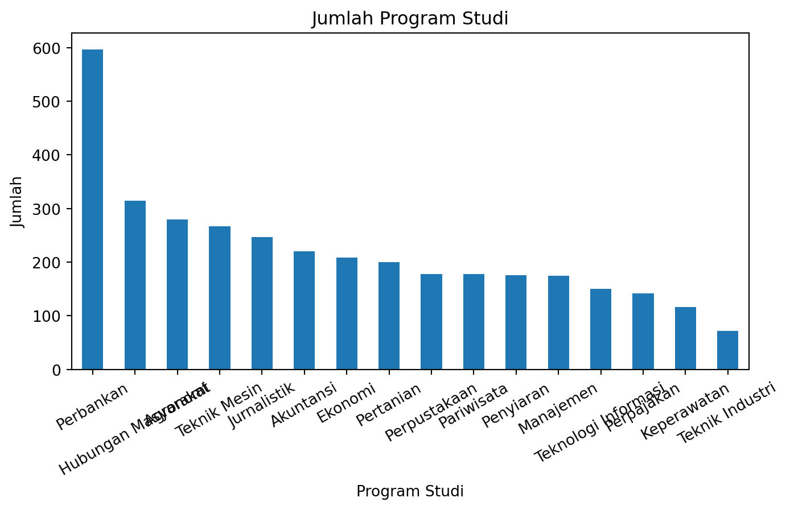
Dari grafik di atas, terlihat bahwa program studi Perbankan mendominasi jumlah mahasiswa, hingga hampir dua kali lipat program studi lainnya. Setelah itu, perlahan menurun hingga Teknik Industri dengan jumlah di bawah 100.
# buat grafik untuk fitur string lainnya
# catatan: untuk subplot diatur oleh blok Jupyter
# buang program studi; akan ditampilkan terpisah dan pertama
string_cols_for_chart = [col for col in string_cols if col != 'Program Studi']
# Untuk tiap fitur kategorikal, buat subplot dalam bentuk grafik batang
for col in string_cols_for_chart:
plt.figure(figsize=(2, 2))
data_unified_clean_age[col].value_counts().plot(kind='bar')
plt.title(f'Jumlah {col}')
plt.xlabel(col)
plt.ylabel('Jumlah')
plt.xticks(rotation=30)
plt.show()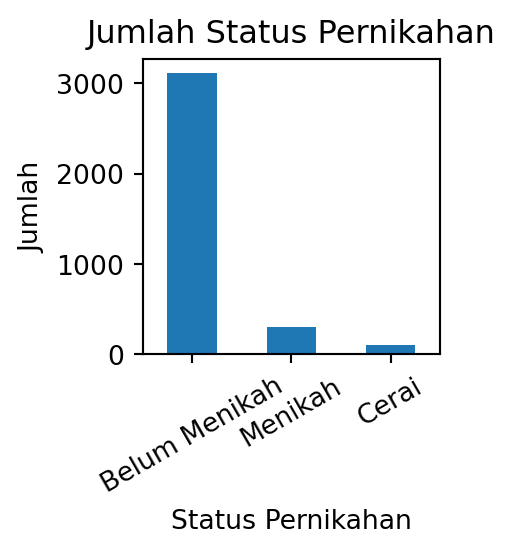
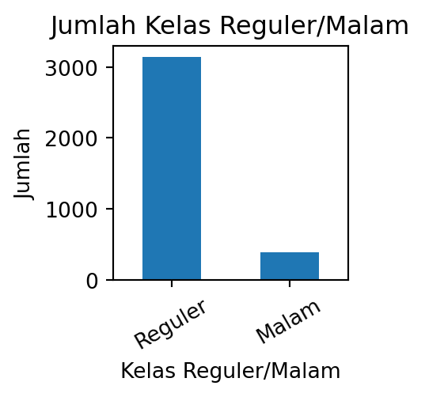
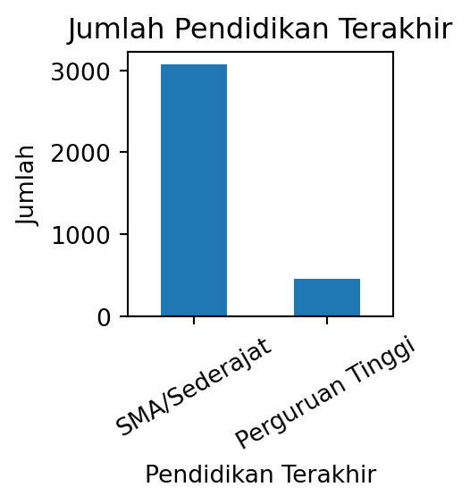
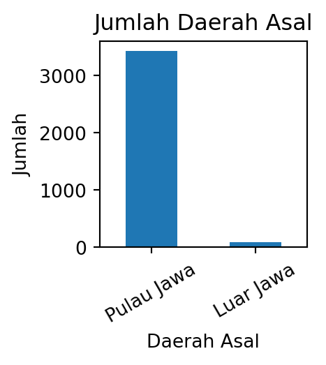
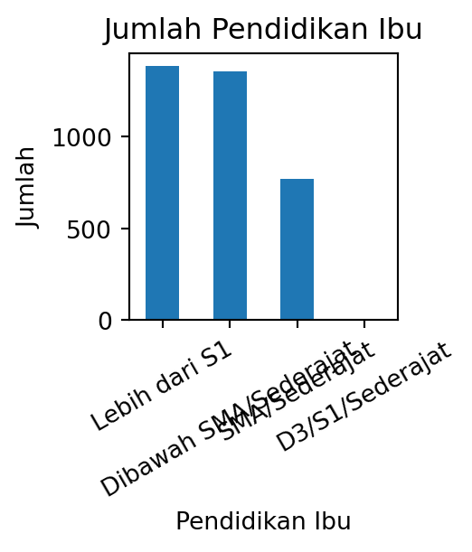
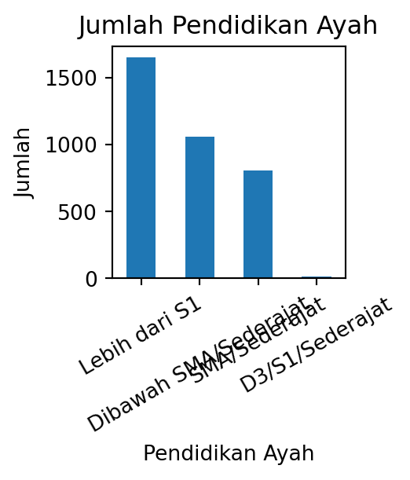
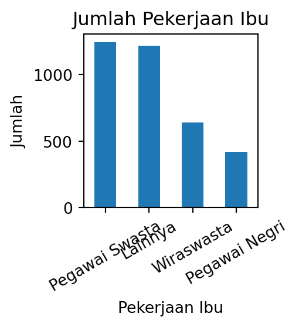
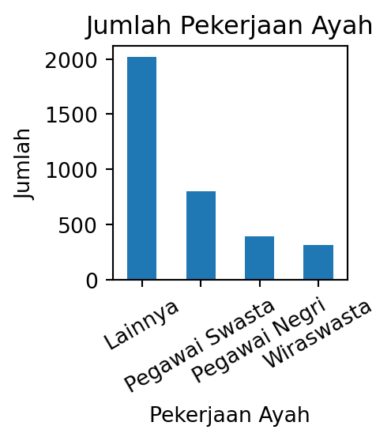
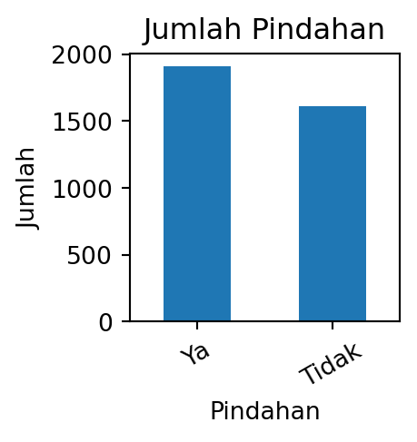
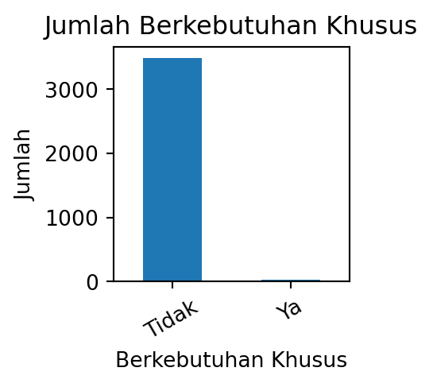
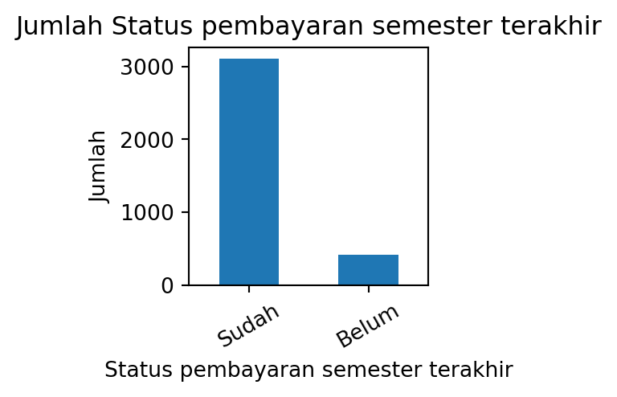
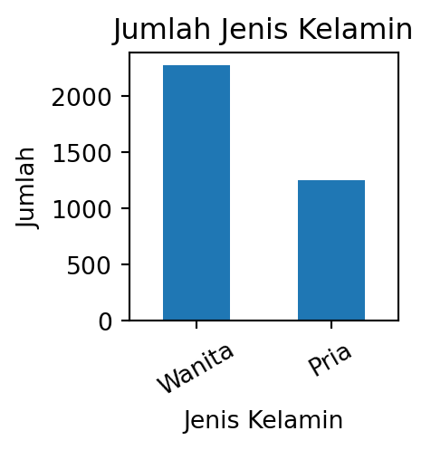
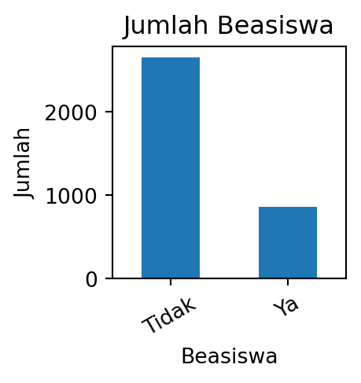
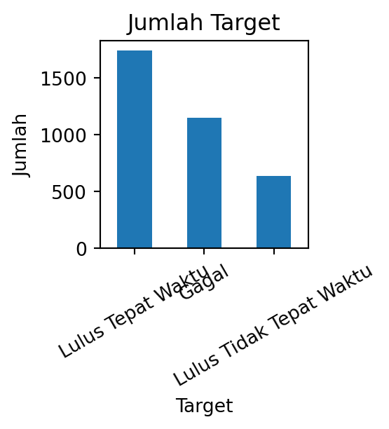
# buat grafik histogram untuk fitur numerik
numeric_cols = data_unified_dedup.select_dtypes(include=[np.number]).columns.tolist()
for col in numeric_cols:
plt.figure(figsize=(4, 3))
data_unified_clean_age[col].hist(bins=20)
plt.title(f'Histogram {col}')
plt.xlabel(col)
plt.ylabel('Frekuensi')
plt.show()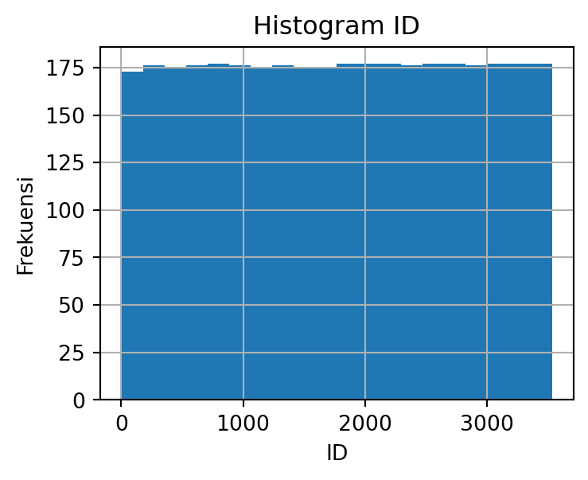
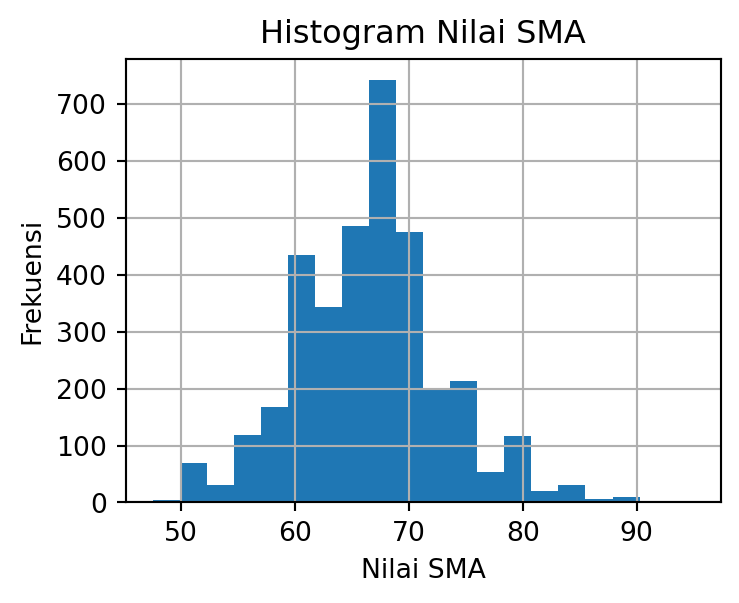
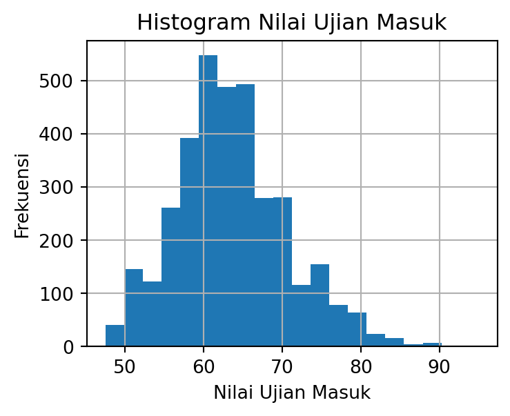
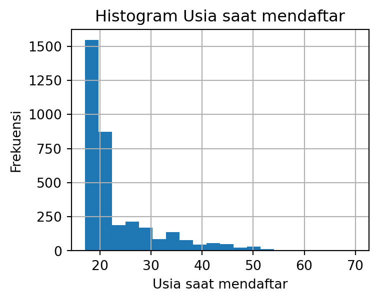
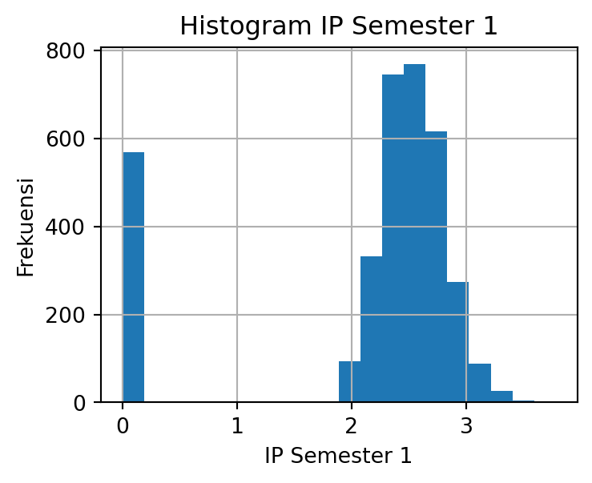
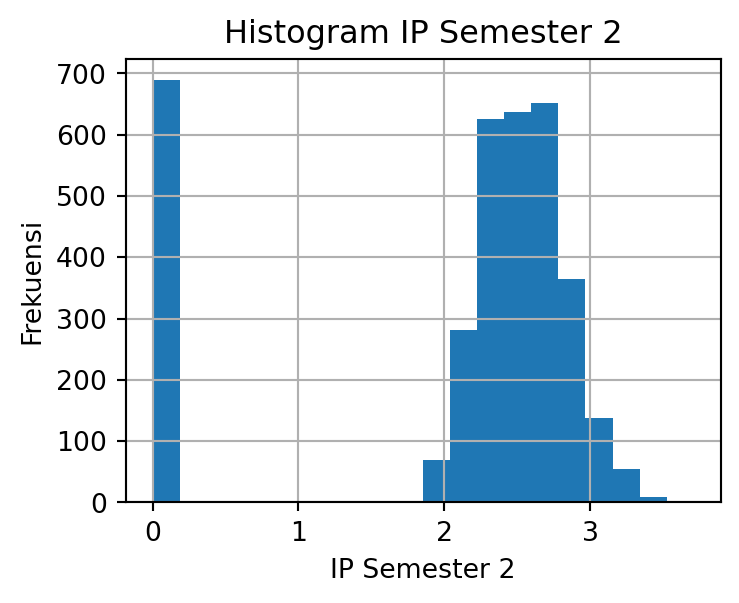
Histogram menunjukkan hal-hal berikut:
- ID tersebar rata, tidak ada yang mendominasi. Distribusi uniform.
- Nilai SMA dan Nilai Ujian Masuk memiliki distribusi yang mirip, yaitu skew ke kanan. Untuk Nilai SMA dominan di daerah 58-65 dengan puncak di 60, sedangkan Nilai Ujian Masuk di daerah 65-70 dengan puncak di 67.
- Usia saat mendaftar terlihat hampir seperti eksponensial, namun lebih tepat dikatakan bahwa ini adalah distribusi normal dengan skew ke kanan drastis. Mayoritas usia saat mendaftar berada di bawah 25, dengan puncak di sekitar 18-19 tahun. Namun terdapat ekor panjang hingga usia 70.
- IP Semester 1 dan IP Semester 2 memiliki nilai cutoff di mana nilai hanya 0 atau 2.0 ke atas, dengan sedikit nilai di antara 0 dan 2.0. Mayoritas IP berada di atas 2.0, dengan puncak di sekitar 2.5, terlihat seperti distribusi normal dengan skew ke kanan.
4.3 Analisis Hubungan Fitur (Task 6)
Agar nantinya kita bisa mendapatkan fitur yang relevan, sebaiknya kita melihat hubungan setiap fitur dengan kelas target.
# 1) Lakukan analisis bivariate
# cross-tab untuk fitur kategorikal (kecuali Target)
for col in [c for c in string_cols if c != 'Target']:
crosstab = pd.crosstab(data_unified_clean_age[col], data_unified_clean_age['Target'])
display(crosstab)| Target | Gagal | Lulus Tepat Waktu | Lulus Tidak Tepat Waktu |
|---|---|---|---|
| Status Pernikahan | |||
| Belum Menikah | 951 | 1586 | 580 |
| Cerai | 51 | 33 | 18 |
| Menikah | 144 | 119 | 40 |
| Target | Gagal | Lulus Tepat Waktu | Lulus Tidak Tepat Waktu |
|---|---|---|---|
| Program Studi | |||
| Agronomi | 52 | 199 | 29 |
| Akuntansi | 74 | 107 | 39 |
| Ekonomi | 108 | 60 | 41 |
| Hubungan Masyarakat | 114 | 112 | 89 |
| Jurnalistik | 69 | 150 | 28 |
| Keperawatan | 65 | 34 | 17 |
| Manajemen | 44 | 97 | 34 |
| Pariwisata | 59 | 102 | 17 |
| Penyiaran | 66 | 77 | 33 |
| Perbankan | 96 | 419 | 82 |
| Perpajakan | 81 | 12 | 49 |
| Perpustakaan | 73 | 73 | 32 |
| Pertanian | 80 | 91 | 29 |
| Teknik Industri | 30 | 25 | 17 |
| Teknik Mesin | 69 | 138 | 60 |
| Teknologi Informasi | 66 | 42 | 42 |
| Target | Gagal | Lulus Tepat Waktu | Lulus Tidak Tepat Waktu |
|---|---|---|---|
| Kelas Reguler/Malam | |||
| Malam | 166 | 161 | 58 |
| Reguler | 980 | 1577 | 580 |
| Target | Gagal | Lulus Tepat Waktu | Lulus Tidak Tepat Waktu |
|---|---|---|---|
| Pendidikan Terakhir | |||
| Perguruan Tinggi | 206 | 176 | 72 |
| SMA/Sederajat | 940 | 1562 | 566 |
| Target | Gagal | Lulus Tepat Waktu | Lulus Tidak Tepat Waktu |
|---|---|---|---|
| Daerah Asal | |||
| Luar Jawa | 25 | 42 | 18 |
| Pulau Jawa | 1121 | 1696 | 620 |
| Target | Gagal | Lulus Tepat Waktu | Lulus Tidak Tepat Waktu |
|---|---|---|---|
| Pendidikan Ibu | |||
| D3/S1/Sederajat | 2 | 6 | 0 |
| Dibawah SMA/Sederajat | 393 | 675 | 287 |
| Lebih dari S1 | 514 | 659 | 216 |
| SMA/Sederajat | 237 | 398 | 135 |
| Target | Gagal | Lulus Tepat Waktu | Lulus Tidak Tepat Waktu |
|---|---|---|---|
| Pendidikan Ayah | |||
| D3/S1/Sederajat | 7 | 3 | 1 |
| Dibawah SMA/Sederajat | 347 | 495 | 214 |
| Lebih dari S1 | 562 | 815 | 275 |
| SMA/Sederajat | 230 | 425 | 148 |
| Target | Gagal | Lulus Tepat Waktu | Lulus Tidak Tepat Waktu |
|---|---|---|---|
| Pekerjaan Ibu | |||
| Lainnya | 426 | 555 | 237 |
| Pegawai Negri | 125 | 218 | 77 |
| Pegawai Swasta | 399 | 634 | 210 |
| Wiraswasta | 196 | 331 | 114 |
| Target | Gagal | Lulus Tepat Waktu | Lulus Tidak Tepat Waktu |
|---|---|---|---|
| Pekerjaan Ayah | |||
| Lainnya | 677 | 979 | 361 |
| Pegawai Negri | 103 | 205 | 86 |
| Pegawai Swasta | 252 | 417 | 131 |
| Wiraswasta | 114 | 137 | 60 |
| Target | Gagal | Lulus Tepat Waktu | Lulus Tidak Tepat Waktu |
|---|---|---|---|
| Pindahan | |||
| Tidak | 603 | 716 | 290 |
| Ya | 543 | 1022 | 348 |
| Target | Gagal | Lulus Tepat Waktu | Lulus Tidak Tepat Waktu |
|---|---|---|---|
| Berkebutuhan Khusus | |||
| Tidak | 1134 | 1723 | 632 |
| Ya | 12 | 15 | 6 |
| Target | Gagal | Lulus Tepat Waktu | Lulus Tidak Tepat Waktu |
|---|---|---|---|
| Status pembayaran semester terakhir | |||
| Belum | 364 | 21 | 31 |
| Sudah | 782 | 1717 | 607 |
| Target | Gagal | Lulus Tepat Waktu | Lulus Tidak Tepat Waktu |
|---|---|---|---|
| Jenis Kelamin | |||
| Pria | 581 | 428 | 243 |
| Wanita | 565 | 1310 | 395 |
| Target | Gagal | Lulus Tepat Waktu | Lulus Tidak Tepat Waktu |
|---|---|---|---|
| Beasiswa | |||
| Tidak | 1033 | 1090 | 535 |
| Ya | 113 | 648 | 103 |
# 2) Plot kedalam grafik sebaran (scatter)
# buat grafik scatter untuk semua fitur kecuali ID terhadap target
for col in [c for c in numeric_cols if c != 'ID' and c != 'Target']:
plt.figure(figsize=(4, 3))
plt.scatter(data_unified_clean_age[col], data_unified_clean_age['Target'])
plt.title(f'Scatter {col} vs Target')
plt.xlabel(col)
plt.ylabel('Target')
plt.show()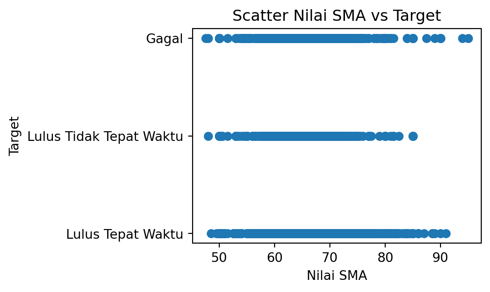
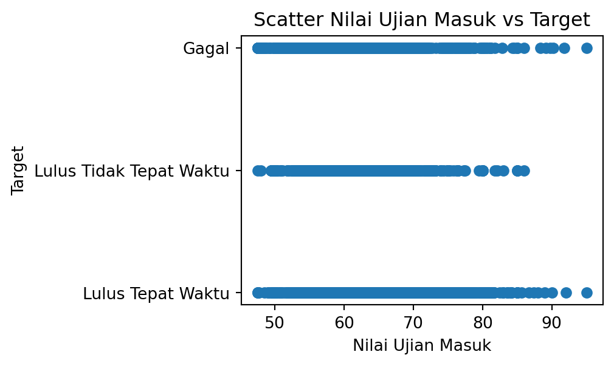
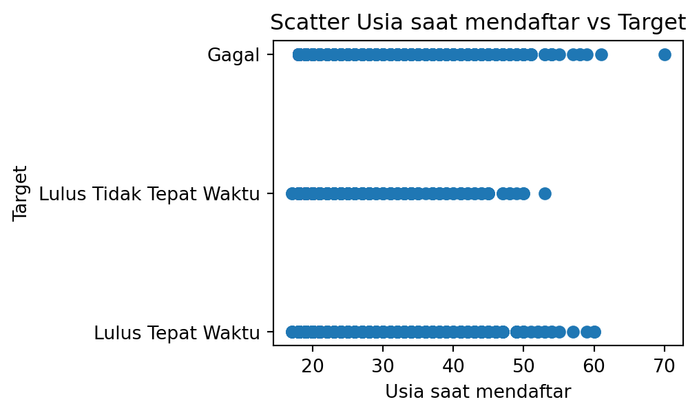
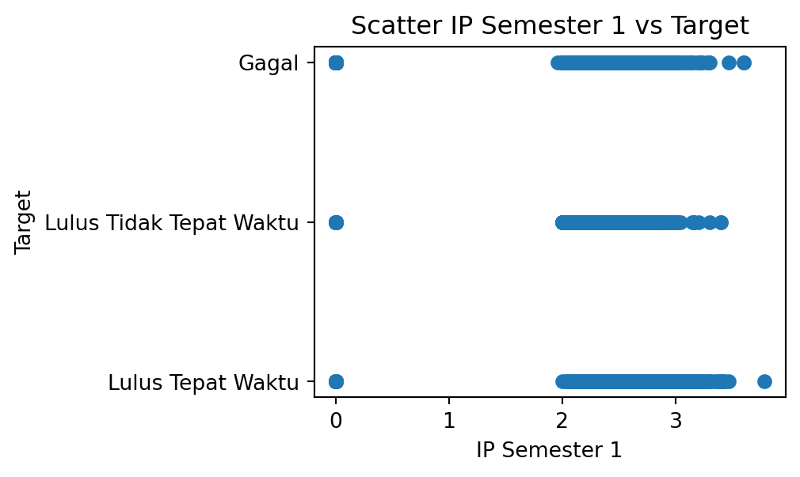
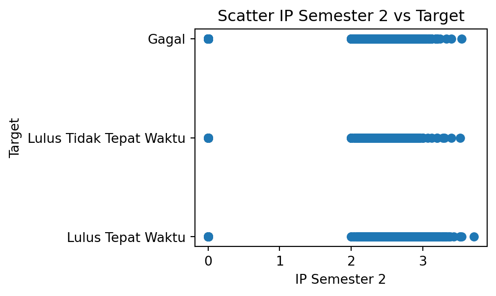
Scatter plot menunjukkan IP semester 1 dan 2 memiliki cutoff di mana nilai hanya \(0\) atau \(2.0\) ke atas.
Untuk analisis skew, kita bisa menggunakan metode statistik seperti skewness untuk mengukur tingkat skew pada distribusi data. Khususnya untuk IP Semester 1 dan IP Semester 2, data dengan IP 0 perlu dibuang agar mendapatkan distribusi yang lebih normal, karena IP 0 kemungkinan besar merupakan data yang tidak valid atau outlier yang ekstrem. Data dengan IP 0 tetap akan dipertahankan untuk analisis lainnya serta untuk proses training dan testing, karena ini bisa jadi merupakan data yang valid untuk kelas target “Gagal” (Tidak Lulus).
# drop values from IP Semester 1 dan IP Semester 2 if they're 0
data_skew_analysis = data_unified_clean_age[(data_unified_clean_age['IP Semester 1'] > 0) & (data_unified_clean_age['IP Semester 2'] > 0)]
skew_results = data_skew_analysis.skew(numeric_only=True)
display(skew_results)ID 0.012328
Nilai SMA 0.197192
Nilai Ujian Masuk 0.485160
Usia saat mendaftar 2.254583
IP Semester 1 0.383436
IP Semester 2 0.366168
dtype: float64# buat grafik histogram untuk fitur numerik
numeric_cols_no_id = [col for col in numeric_cols if col != 'ID']
for col in numeric_cols_no_id:
plt.figure(figsize=(4, 3))
data_skew_analysis[col].hist(bins=20)
plt.title(f'Histogram {col}')
plt.xlabel(col)
plt.ylabel('Frekuensi')
plt.show()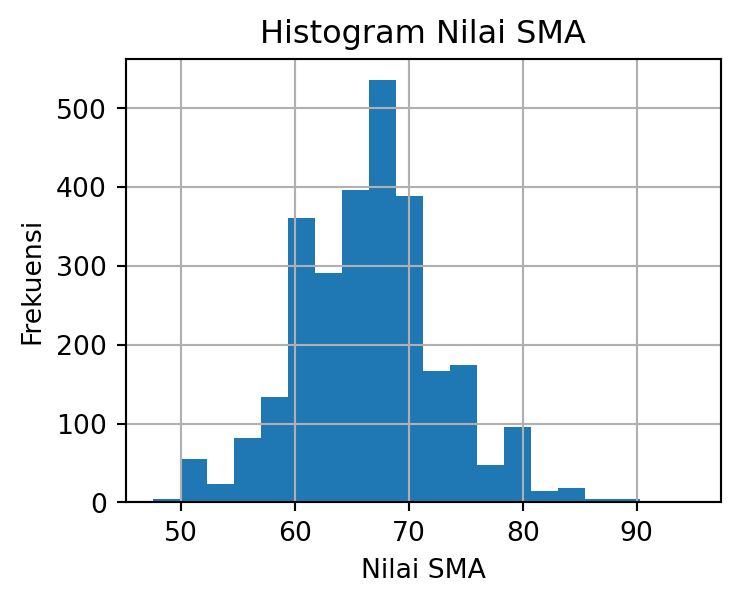
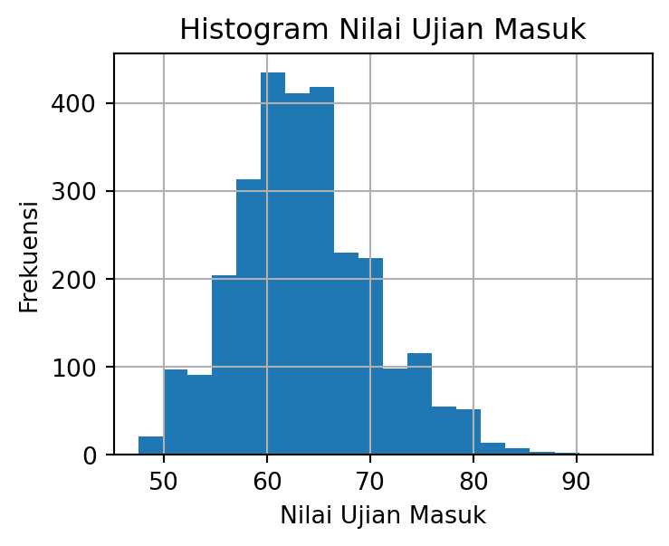
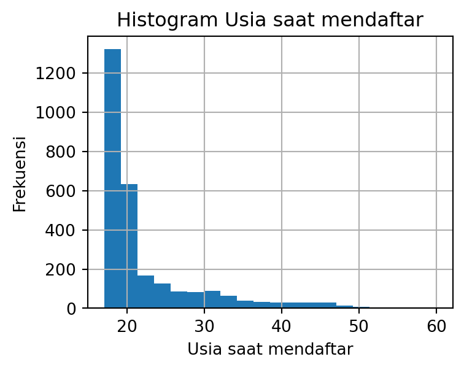
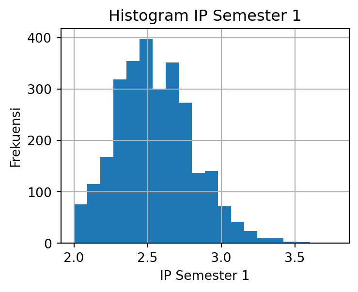
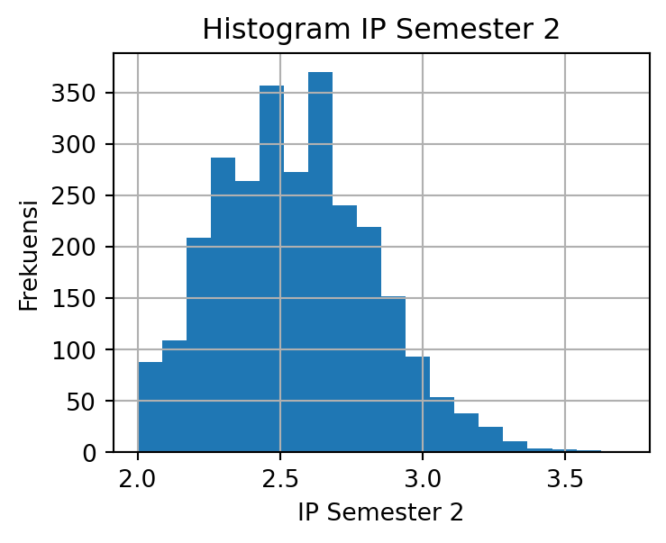
# 2) Identifikasi outlier dengan boxplot
for col in numeric_cols_no_id:
plt.figure(figsize=(4, 3))
data_skew_analysis.boxplot(column=col)
plt.title(f'Boxplot {col}')
plt.ylabel(col)
plt.show()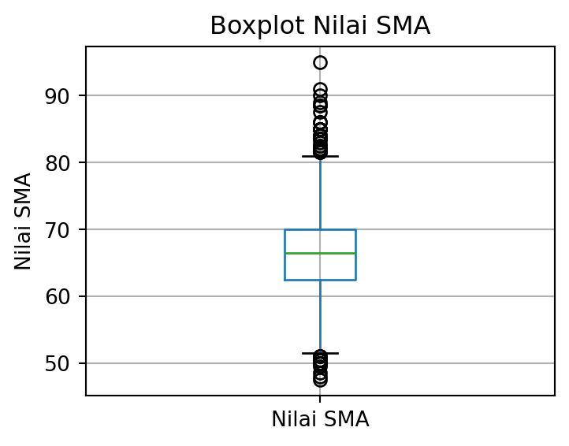
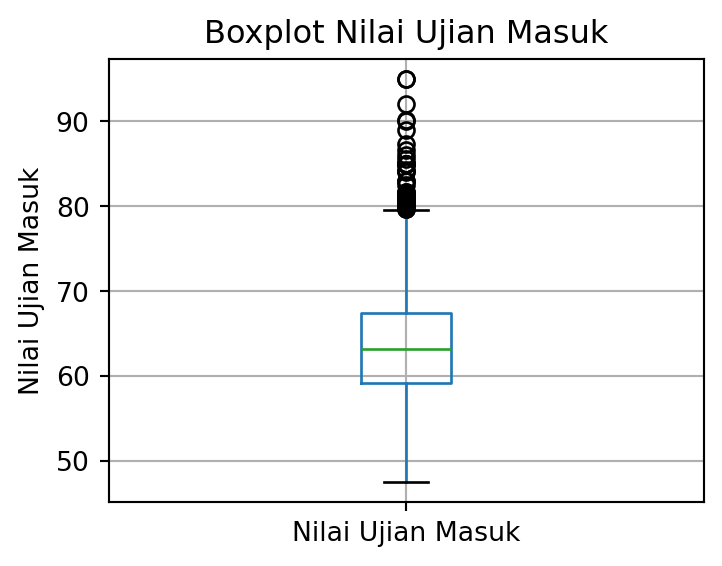
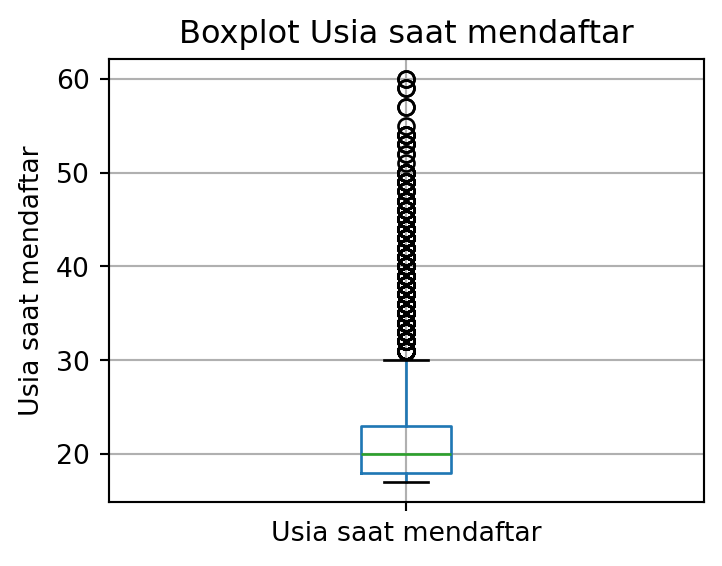
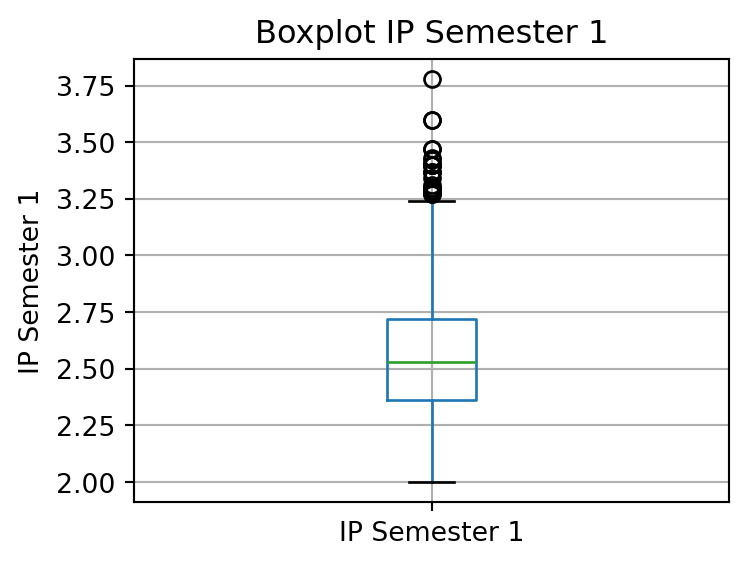
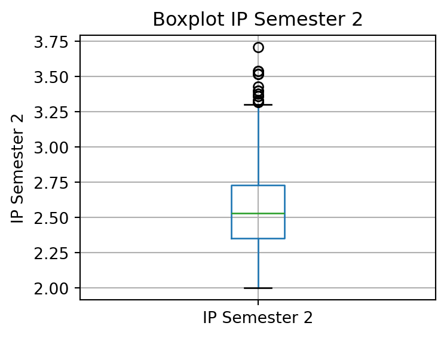
corr = data_skew_analysis[numeric_cols_no_id].corr()
fig, ax = plt.subplots(figsize=(8, 6))
im = ax.imshow(corr, cmap="coolwarm", vmin=-1, vmax=1)
plt.colorbar(im)
ax.set_xticks(range(len(corr.columns)))
ax.set_yticks(range(len(corr.columns)))
ax.set_xticklabels(corr.columns, rotation=45, ha="right")
ax.set_yticklabels(corr.columns)
plt.title("Feature Correlation Heatmap")
plt.tight_layout()
plt.show()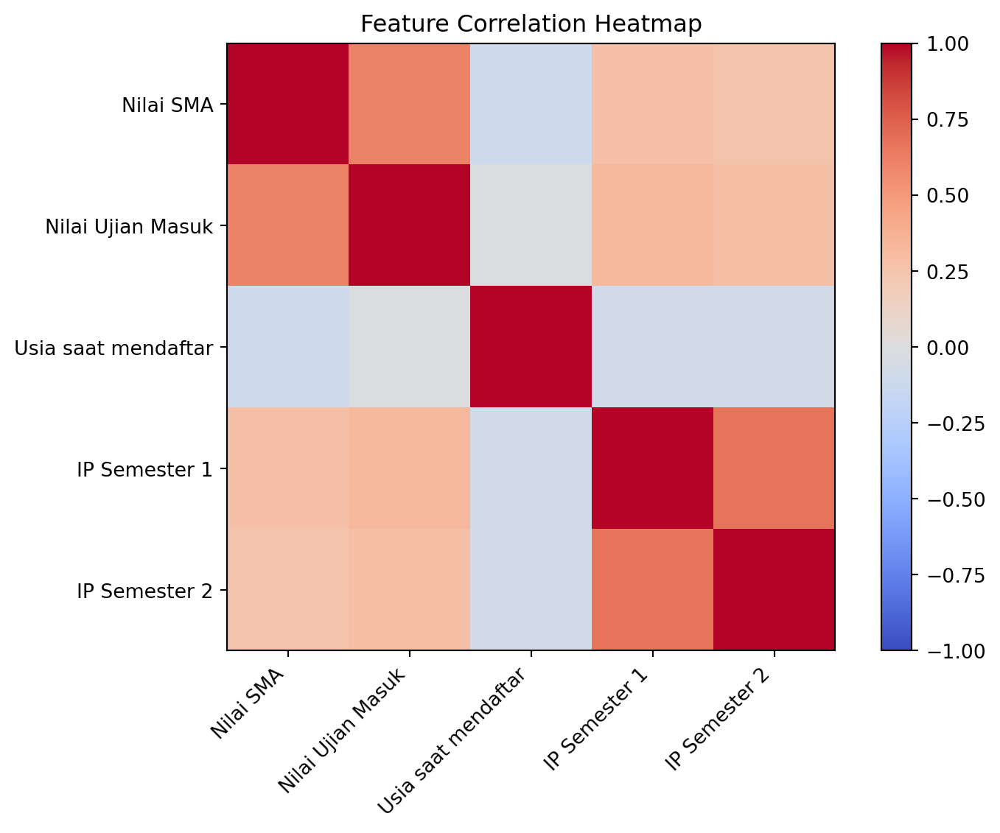
4.4 Preprocessing Data untuk Pemodelan
Sebelum melatih model machine learning, data perlu dipersiapkan terlebih dahulu agar dapat diproses oleh algoritma klasifikasi. Tahap ini meliputi encoding variabel target, encoding fitur kategorikal, pemisahan fitur (\(X\)) dan target (\(y\)) dengan mempertahankan baris yang memiliki nilai IP 0, serta pembagian data (train-test split) dan standardisasi fitur numerik.
Untuk standardisasi fitur numerik, ini akan dilakukan setelah proses pembagian data (train-test split), agar informasi dari data testing tidak bocor ke data training. Selengkapnya akan dibahas pada bagian selanjutnya.
4.4.1 Encoding Target dan Fitur Kategorikal
Variabel target (Target) dikodekan secara manual menjadi nilai numerik sebagai berikut:
Gagal: 0Lulus Tidak Tepat Waktu: 1Lulus Tepat Waktu: 2
Fitur-fitur kategorikal bertipe string dikonversi menggunakan One-Hot Encoding.
# 1) Pemetaan target secara ordinal
target_map = {
'Gagal': 0,
'Lulus Tidak Tepat Waktu': 1,
'Lulus Tepat Waktu': 2
}
# Salin data asli (mempertahankan IP = 0)
data_prep = data_unified_clean_age.copy()
data_prep['Target'] = data_prep['Target'].map(target_map)
# 2) Identifikasi kolom kategorikal (tipe string/object) selain ID dan Target
cat_features = data_prep.select_dtypes(include=['object', 'category']).columns.tolist()
if 'ID' in cat_features:
cat_features.remove('ID')
# 3) Terapkan One-Hot Encoding dengan menghindari dummy variable trap
data_encoded = pd.get_dummies(data_prep, columns=cat_features, drop_first=True, dtype=int)
# Tampilkan ukuran data untuk verifikasi
print(f"Dimensi data sebelum encoding: {data_prep.shape}")
print(f"Dimensi data setelah encoding: {data_encoded.shape}")Dimensi data sebelum encoding: (3522, 21)
Dimensi data setelah encoding: (3522, 44)4.4.2 Pemisahan Fitur (\(X\)) dan Target (\(y\))
Kita memisahkan kolom input/fitur (\(X\)) dari target (\(y\)). Kolom ID dan Target dibuang dari \(X\).
# Pisahkan fitur dan target
X = data_encoded.drop(columns=['ID', 'Target'])
y = data_encoded['Target']5 Pemodelan Machine Learning
5.1 Penanganan Class Imbalance (Task 7a)
Untuk menentukan perlunya penanganan class imbalance, kita perlu melihat distribusi kelas target terlebih dahulu.
# hitung jumlah data target
target_counts = y.value_counts()
# ubah ke rasio
target_ratios = target_counts / len(y)
# tampilkan sebagai tabel markdown
print("Target | Count | Ratio")
print("-------|-------|------")
for target_class, count in target_counts.items():
ratio = target_ratios[target_class]
print(f"| {target_class} | {count} | {ratio:.2f} |")| Target | Count | Ratio |
|---|---|---|
| 2 | 1738 | 0.49 |
| 0 | 1146 | 0.33 |
| 1 | 638 | 0.18 |
Rasio Gagal : Lulus Tidak Tepat Waktu : Lulus Tepat Waktu adalah sekitar 3:2:5. Ini dikategorikan sebagai ketidakseimbangan kelas ringan hingga sedang (mild to moderate imbalance), bukan ketidakseimbangan yang ekstrem (seperti pada kasus deteksi penipuan kartu kredit atau penyakit langka yang rasionya bisa < 1%). Oleh karena itu, penanganan class imbalance dengan teknik augmentasi data seperti SMOTE atau ADASYN tidak diperlukan dalam kasus ini, karena algoritma klasifikasi yang umum seperti Random Forest, Gradient Boosting, atau Logistic Regression masih dapat bekerja dengan baik tanpa penanganan khusus untuk ketidakseimbangan kelas yang ringan hingga sedang. Namun, kita tetap perlu memantau metrik evaluasi yang sensitif terhadap ketidakseimbangan kelas seperti F1-score, Precision, dan Recall untuk memastikan bahwa model tidak bias terhadap kelas mayoritas.
Algoritma yang akan digunakan untuk klasifikasi ini adalah Random Forest karena algoritma ini cukup robust terhadap ketidakseimbangan kelas yang ringan hingga sedang, serta mampu menangani fitur numerik dan kategorikal dengan baik tanpa perlu banyak penyesuaian. Selain itu, Random Forest juga memiliki mekanisme internal untuk menangani overfitting melalui penggunaan banyak pohon keputusan yang dibangun pada subset data yang berbeda, sehingga dapat memberikan performa yang baik pada dataset ini tanpa perlu melakukan augmentasi data.
5.1.1 Pembagian Data Training dan Testing (Task 7b)
Untuk pembagian data training dan testing, kita akan menggunakan metode stratified split untuk memastikan bahwa rasio kelas target tetap terjaga pada kedua set data.
Setelah itu, kita akan melakukan standardisasi fitur numerik agar memiliki skala yang sama, yang dapat membantu algoritma klasifikasi dalam proses pembelajaran. Alasan dilakukan standardisasi setelah pembagian data adalah untuk menghindari data leakage, di mana informasi dari data testing tidak bocor ke data training melalui proses standardisasi yang dilakukan sebelum pembagian data.
Untuk standardisasi, kita akan menggunakan StandardScaler dari library sklearn, yang akan mengubah fitur numerik menjadi distribusi dengan mean 0 dan standar deviasi 1. Fitur numerik yang akan distandardisasi adalah “Nilai SMA”, “Nilai Ujian Masuk”, “Usia saat mendaftar”, “IP Semester 1”, dan “IP Semester 2”.
from sklearn.model_selection import train_test_split
from sklearn.preprocessing import StandardScaler
# 1) Pembagian data training dan testing (stratified split untuk menjaga rasio kelas)
X_train, X_test, y_train, y_test = train_test_split(X, y, test_size=0.2, random_state=42, stratify=y)
# 2) Standardisasi fitur numerik (fit hanya pada training set untuk menghindari data leakage)
num_cols = ['Nilai SMA', 'Nilai Ujian Masuk', 'Usia saat mendaftar', 'IP Semester 1', 'IP Semester 2']
scaler = StandardScaler()
X_train_scaled = X_train.copy()
X_test_scaled = X_test.copy()
X_train_scaled[num_cols] = scaler.fit_transform(X_train[num_cols])
X_test_scaled[num_cols] = scaler.transform(X_test[num_cols])
print(f"Jumlah data training (scaled): {X_train_scaled.shape}")
print(f"Jumlah data testing (scaled): {X_test_scaled.shape}")Jumlah data training (scaled): (2817, 42)
Jumlah data testing (scaled): (705, 42)5.2 Pelatihan Model (Task 8)
Kita melatih model Random Forest menggunakan data training yang sudah didefinisikan sebelumnya (X_train_scaled, y_train). Untuk mengantisipasi ketidakseimbangan kelas ringan-sedang, kita mengaktifkan opsi class_weight='balanced'. Setelah melatih model, kita mengevaluasi stabilitas model menggunakan 5-Fold Cross Validation.
from sklearn.ensemble import RandomForestClassifier
from sklearn.model_selection import cross_val_score, StratifiedKFold
import numpy as np
# 1) Lakukan proses training dengan algoritma yang telah dipilih (Random Forest)
rf_model = RandomForestClassifier(n_estimators=100, class_weight='balanced', random_state=42, n_jobs=-1)
rf_model.fit(X_train_scaled, y_train)
# 2) Lakukan evaluasi model dengan K-fold
cv = StratifiedKFold(n_splits=5, shuffle=True, random_state=42)
cv_scores = cross_val_score(rf_model, X_train_scaled, y_train, cv=cv, scoring='accuracy')
print("Akurasi Cross-Validation per Fold:")
print(cv_scores)
print(f"Rata-rata Akurasi Cross-Validation: {np.mean(cv_scores):.4f}")Akurasi Cross-Validation per Fold:
[0.72163121 0.70744681 0.73889876 0.73001776 0.71758437]
Rata-rata Akurasi Cross-Validation: 0.72316 Evaluasi Model (Task 9)
Setelah model dilatih, kita mengevaluasi performanya pada data testing (X_test_scaled, y_test) untuk melihat sejauh mana kemampuan model dalam melakukan generalisasi pada data baru. Kita akan mengukur kualitas klasifikasi melalui Classification Report (mengukur precision, recall, f1-score untuk masing-masing dari ketiga kelas target) dan menggambarkan Confusion Matrix serta analisis Feature Importance.
from sklearn.metrics import classification_report, confusion_matrix, ConfusionMatrixDisplay
import matplotlib.pyplot as plt
# 1) Evaluasi dengan data testing
y_pred = rf_model.predict(X_test_scaled)
# 2) Hitung dengan metrik pengukuran (Classification Report)
target_names = ['Gagal', 'Lulus Tidak Tepat Waktu', 'Lulus Tepat Waktu']
print("Classification Report pada Data Testing:")
print(classification_report(y_test, y_pred, target_names=target_names))Classification Report pada Data Testing:
precision recall f1-score support
Gagal 0.74 0.67 0.70 229
Lulus Tidak Tepat Waktu 0.39 0.10 0.16 128
Lulus Tepat Waktu 0.69 0.92 0.79 348
accuracy 0.69 705
macro avg 0.61 0.56 0.55 705
weighted avg 0.65 0.69 0.65 705
# 3) Visualisasi Confusion Matrix
# versi teks
cm = confusion_matrix(y_test, y_pred)
print("Confusion Matrix:")
print(cm)
# versi plot
fig, ax = plt.subplots(figsize=(6, 5))
ConfusionMatrixDisplay.from_predictions(
y_test,
y_pred,
display_labels=target_names,
cmap=plt.cm.Blues,
ax=ax
)
plt.title("Confusion Matrix Model Random Forest")
plt.grid(False)
plt.show()Confusion Matrix:
[[153 8 68]
[ 39 13 76]
[ 16 12 320]]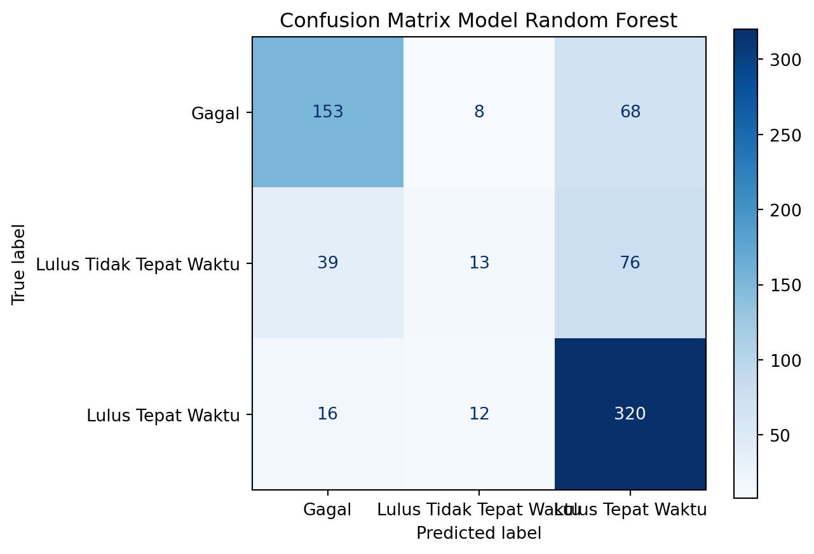
6.0.1 Analisis Fitur Paling Berpengaruh (Feature Importance)
Random Forest memungkinkan kita melihat fitur mana yang memiliki pengaruh terbesar dalam proses pengambilan keputusan model untuk memprediksi kelulusan mahasiswa.
# Mendapatkan nilai importance fitur
importances = rf_model.feature_importances_
feature_names = X.columns
# Membuat series dan mengambil 10 fitur teratas
feat_importances = pd.Series(importances, index=feature_names)
top_features = feat_importances.sort_values(ascending=False).head(10)
# Tampilkan tabel markdown untuk 10 fitur teratas
print("Fitur | Importance Score")
print("------|----------------")
for feature, score in top_features.items():
print(f"| {feature} | {score:.4f} |")| Fitur | Importance Score |
|---|---|
| IP Semester 2 | 0.1843 |
| IP Semester 1 | 0.1327 |
| Nilai Ujian Masuk | 0.0923 |
| Nilai SMA | 0.0845 |
| Usia saat mendaftar | 0.0772 |
| Status pembayaran semester terakhir_Sudah | 0.0497 |
| Beasiswa_Ya | 0.0280 |
| Jenis Kelamin_Wanita | 0.0215 |
| Pindahan_Ya | 0.0187 |
| Pekerjaan Ibu_Pegawai Swasta | 0.0177 |
# Visualisasi horizontal bar plot
plt.figure(figsize=(8, 5))
top_features.plot(kind='barh').invert_yaxis()
plt.title("10 Fitur Paling Berpengaruh dalam Klasifikasi")
plt.xlabel("Tingkat Kepentingan (Importance Score)")
plt.ylabel("Fitur")
plt.tight_layout()
plt.show()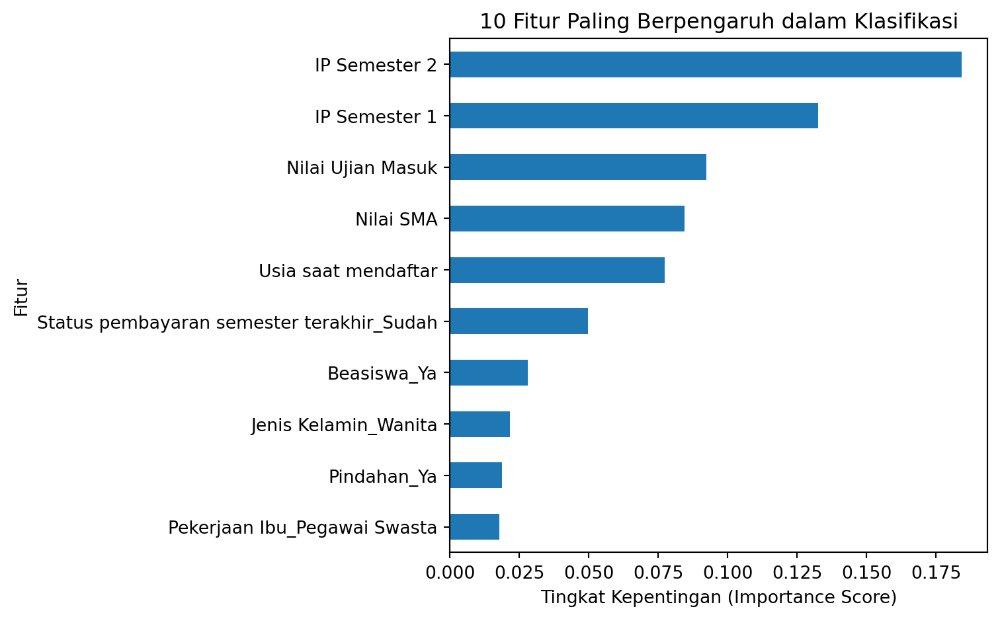
7 Kesimpulan (Task 10)
Berdasarkan hasil pemodelan dan evaluasi menggunakan algoritma Random Forest, kita dapat menarik beberapa kesimpulan penting:
- Konsistensi Performa Model: Rata-rata akurasi 5-Fold Cross Validation pada data training adalah 72,31%, sedangkan akurasi pada data testing adalah 69,00%. Selisih penurunan performa yang tipis (~3,3%) mengindikasikan adanya sedikit overfitting ringan, namun secara umum model masih stabil dan memiliki kemampuan generalisasi yang cukup wajar.
- Analisis Kualitas Klasifikasi Per-Kelas:
- Lulus Tepat Waktu (Mayoritas): Menunjukkan kinerja terbaik dengan tingkat sensitivitas (Recall) mencapai 92%. Model sangat andal dalam mendeteksi mahasiswa yang dapat lulus tepat waktu (320 dari 348 mahasiswa berhasil diklasifikasikan dengan benar).
- Gagal (Kritis): Memiliki performa deteksi dini yang cukup andal dengan tingkat ketepatan (Precision) 74% dan sensitivitas (Recall) 67% (153 dari 229 mahasiswa). Hal ini memberikan jaminan bahwa sebagian besar mahasiswa yang berisiko gagal dapat diidentifikasi secara dini.
- Lulus Tidak Tepat Waktu (Minoritas - Isu Kritis): Model mengalami kesulitan yang signifikan pada kelas transisi ini, dengan Recall hanya 10% (hanya 13 dari 128 mahasiswa) dan f1-score 16%. Matrix kebingungan (confusion matrix) menunjukkan sebagian besar mahasiswa kelas ini salah diklasifikasikan sebagai
Lulus Tepat Waktu(76) atauGagal(39). Hal ini menunjukkan bahwa pembobotan kelas (class_weight='balanced') saja belum cukup untuk membantu model membedakan karakteristik kelas transisi ini dari dua kelas ekstrem lainnya.
- Variabel Penentu Utama Kelulusan: Hasil Feature Importance memperkuat temuan bahwa performa akademis di tahun pertama adalah faktor penentu terbesar. Dua fitur teratas adalah
IP Semester 2(18,43%) danIP Semester 1(13,27%). Faktor pendukung lainnya meliputiNilai Ujian Masuk(9,23%),Nilai SMA(8,45%), danUsia saat mendaftar(7,72%). Kondisi finansial berupa status pelunasan SPP (Status pembayaran semester terakhir) menempati posisi keenam dengan nilai kepentingan 4,97%. - Implikasi dan Rekomendasi Aksi: Wali akademik dapat menggunakan model ini dengan tingkat kepercayaan tinggi untuk membedakan dua skenario ekstrem (mahasiswa yang pasti lulus tepat waktu vs mahasiswa yang berisiko tinggi gagal). Namun, model harus dibaca secara hati-hati terkait kategori mahasiswa yang lulus lambat/terlambat karena tingginya tingkat false negative (terlewat deteksi). Untuk pengembangan sistem selanjutnya, disarankan mencoba teknik optimasi hiperparameter, algoritma boosting (seperti XGBoost/LightGBM), atau menguji metode penanganan ketimbang kelas lainnya seperti SMOTE khusus pada kelas minoritas tersebut.
8 Lampiran
8.1 Diagnostik Python
import IPython as ipy
print(ipy.sys_info()){'commit_hash': 'f5e51b8',
'commit_source': 'installation',
'default_encoding': 'utf-8',
'ipython_path': '/var/home/nord/ContainerHomes/ubuntu-bigdata/miniconda3/lib/python3.13/site-packages/IPython',
'ipython_version': '9.11.0',
'os_name': 'posix',
'platform': 'Linux-6.19.14-101.fc44.x86_64-x86_64-with-glibc2.39',
'sys_executable': '/var/home/nord/ContainerHomes/ubuntu-bigdata/miniconda3/bin/python',
'sys_platform': 'linux',
'sys_version': '3.13.12 | packaged by Anaconda, Inc. | (main, Feb 24 2026, '
'16:13:31) [GCC 14.3.0]'}Catatan Kaki
Badan Pengembangan dan Pembinaan Bahasa. (t.t.). Kodefikasi. Dalam Kamus Besar Bahasa Indonesia Daring. Diakses 13 Mei, 2026, dari https://kbbi.kemendikdasmen.go.id/entri/kodefikasi.↩︎